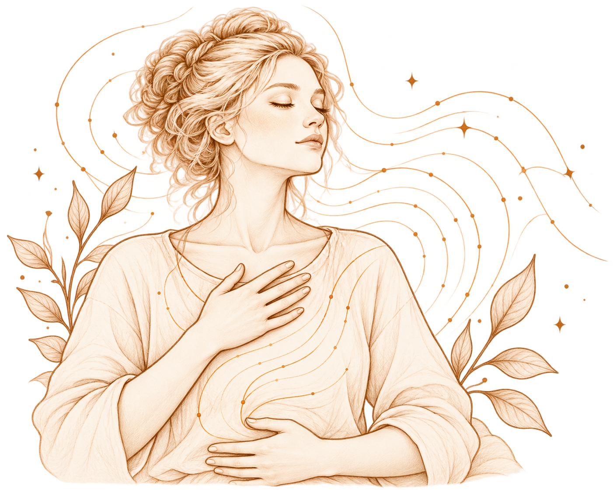

Медитация существует тысячи лет, но наука начала изучать её относительно недавно.
Теперь для этого используют МРТ, ЭЭГ, психологические тесты и эксперименты, в которых можно проверить, что происходит с вниманием, восприятием эмоций и ощущением собственного тела.
И чем больше исследований появляется, тем интереснее становится картина. Потому что медитация — это не просто «сидеть с закрытыми глазами».
Что вообще происходит
во время медитации?
Представьте: вы садитесь и обращаете внимание на дыхание. Через несколько секунд в голову приходит мысль. Потом ещё одна.
Вы вспоминаете разговор, планируете завтрашний день, замечаете звук за окном — и только потом понимаете: «Я опять думаю о чём-то другом».
В практике осознанности именно этот момент очень важен. Не нужно сделать так, чтобы мыслей не было. Задача скорее в том, чтобы заметить, куда ушло внимание, и снова вернуть его к выбранному объекту — например, к дыханию.
Поэтому исследователи рассматривают медитацию в том числе как тренировку внимания и способности замечать происходящее.

А тело здесь при чём?
Во многих практиках внимание направляют не только на мысли, но и на ощущения тела: дыхание, положение тела, напряжение мышц, тепло, холод, сердцебиение.
Получается интересная вещь: человек не обязательно меняет ощущение специально. Он начинает его замечать. Это хорошо перекликается с тем, что мы уже знаем об интероцепции — восприятии сигналов, которые приходят от собственного организма.
Исследователи пока только начинают разбираться, как именно практики осознанности связаны с телесным восприятием. В крупных обзорах отмечается, что исследований этой стороны медитации пока меньше, чем исследований внимания и эмоциональных процессов.
То есть фраза «медитация помогает лучше чувствовать своё тело» звучит правдоподобно, но наука пока не может поставить здесь такую же уверенную точку, как в учебнике.


А что в этот момент
происходит с мозгом?
Учёные используют функциональную МРТ, чтобы посмотреть, какие участки и сети мозга меняют свою активность во время медитации. Одна из систем, которая особенно часто появляется в исследованиях, — сеть пассивного режима работы мозга (default mode network, DMN).
Она связана, среди прочего, с самореференцией, воспоминаниями и мыслями о прошлом и будущем.
Некоторые исследования показывают, что во время практик осознанности активность и связность внутри этой сети могут меняться. Но это не означает, что медитация просто «выключает мысли». Современные обзоры подчёркивают: мозг во время медитации не переходит в один универсальный режим — разные практики задействуют разные процессы и сети.
И это важное уточнение. Медитировать не значит перестать думать. Иногда медитация скорее помогает заметить сам момент, когда мысль унесла нас за собой.
Что же тогда действительно интересно?
Пожалуй, сам факт, что обычный акт внимания можно изучать экспериментально.
Мы можем сесть на несколько минут, обратить внимание на дыхание — и заметить, как внимание ушло. Можем заметить напряжение в плечах, хотя минуту назад его не ощущали. Можем обнаружить, что неприятная мысль появилась — и вместе с ней изменилось ощущение в теле.
Именно такие маленькие процессы сейчас становятся объектом исследований.
Современная наука постепенно пытается разобраться не в том, «полезна ли медитация вообще», а в гораздо более интересном вопросе: что именно происходит с человеком, когда он учится замечать то, что обычно проходит мимо внимания?
И возможно, именно здесь медитация становится особенно интересной — не как волшебная кнопка для спокойствия, а как способ исследовать собственное внимание, тело и то, как мы воспринимаем происходящее с нами.